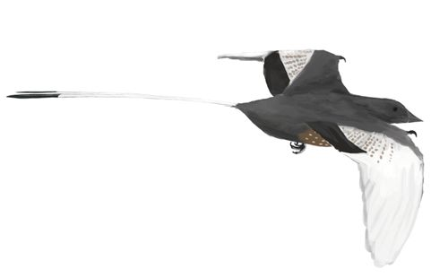
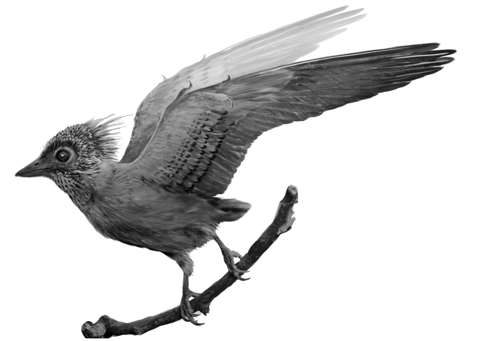
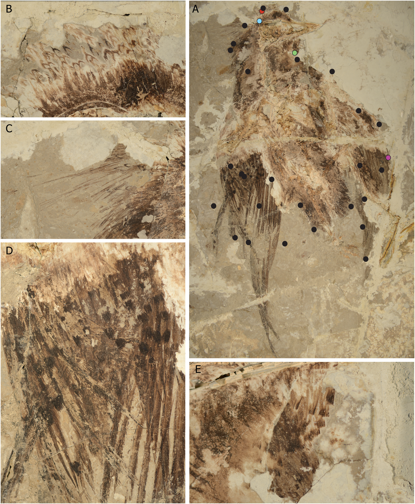
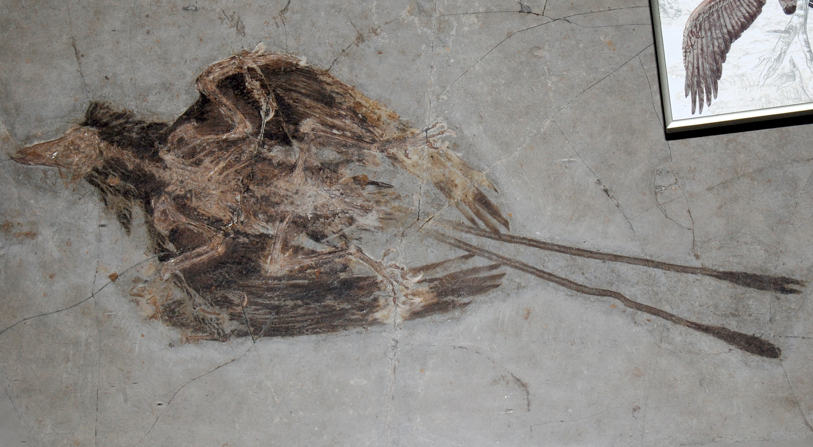
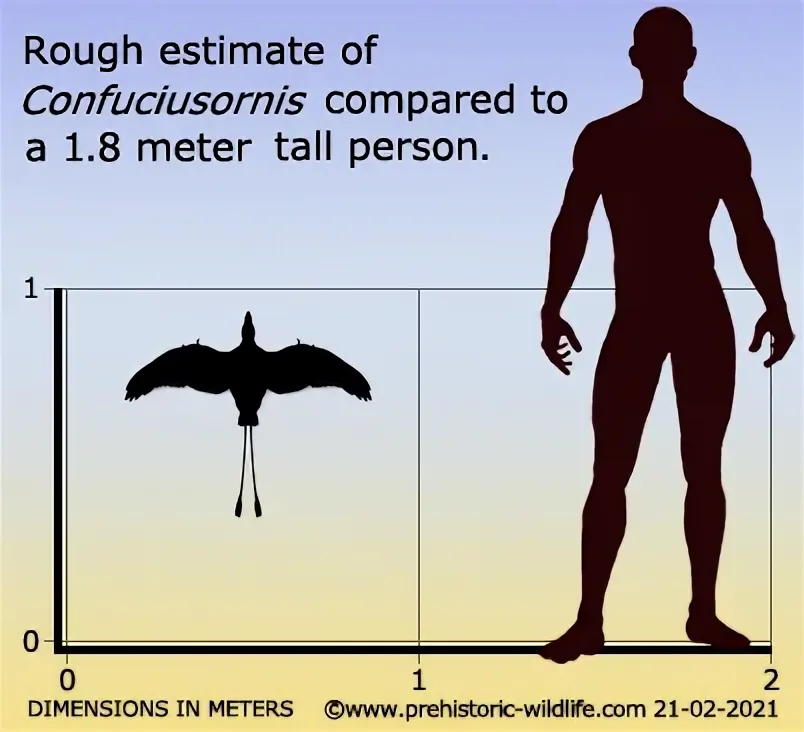

Early Cretaceous (~125 million years ago)
Liaoning Province, China
Yixian and Tiaojishan Formations
In a study by Zhang et al. (2010), samples were taken from the periphery of specimen IVPP V13171. Of the more than 200 fragments examined, almost all contained melanosomes, representing both pheomelanosomes (responsible for reddish/rufous tones) and eumelanosomes (responsible for black/grey coloration). The presence of both varieties indicates that the plumage of Confuciusornis featured a combination of black and reddish-brown shades. Furthermore, shifts in the relative density of pheo- and eumelanosomes across short distances within individual feathers suggest intricate color patterning—such as stripes, spots, or gradients—on a single feather level. In Wogelius et al. (2011), researchers conducted trace-metal mapping on the fossil feathers of specimen BHI-6358. They demonstrated that copper forms stable organometallic complexes with eumelanin, allowing them to map pigmentation patterns in Confuciusornis sanctus based on copper distribution. Subsequently, Li et al. (2018) examined a newly recovered specimen, CUGB P140; although the authors did not reconstruct specific hues, they mapped comprehensive color patterns across the entire body.
Scanning electron microscopy (SEM) and Synchrotron Rapid Scanning X-ray Fluorescence (SRS-XRF).

Possible coloration of Confuciusornis sanctus.
Monochrome color reconstruction of Confuciusornis sanctus from Li et al. (2018).
Specimen CUGB P1401 examined in Li et al. (2018).
Specimen of Confuciusornis sanctus with tail feathers from the Natural History Museum in Vienna.
Size of Confuciusornis sanctus.